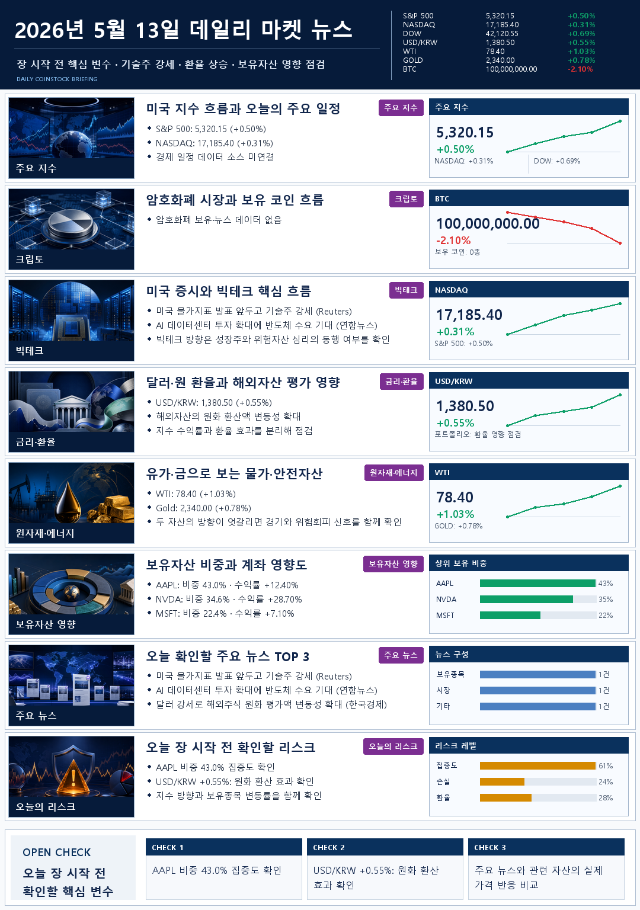

보유현황을 기준점으로
평가금액, 손익, 수익률과 상위 비중을 먼저 확인합니다. 계좌 미연동 방식도 선택할 수 있습니다.
보유종목과 비중을 먼저 봅니다.
지수·환율·뉴스를 함께 해석합니다.
찾아보지 않아도 텔레그램으로 옵니다.
The Actual Report
주요 지수부터 보유자산 영향과 오늘의 리스크까지, 서로 다른 레벨의 정보를 8개 고정 카테고리로 정리합니다.

Built Around Your Portfolio
매일 같은 시간, 보유자산과 시장 변화를 텔레그램 텍스트와 이미지로 한 번에 확인
평가금액, 손익, 수익률과 상위 비중을 먼저 확인합니다. 계좌 미연동 방식도 선택할 수 있습니다.
S&P 500, NASDAQ, USD/KRW와 관련 뉴스를 보유자산에 연결해 보여줍니다.
짧은 텍스트 브리핑과 1080×1536 이미지 리포트가 한 채팅방에 순서대로 도착합니다.
카테고리, 수치, 차트 종가, 해상도와 민감정보 노출 여부를 자동으로 검사합니다.
Every Morning
계좌·시장·뉴스
보유자산 중심 해석
수치·문구·이미지 QA
텍스트와 이미지
Simple Pricing
보유자산·시장·뉴스를 같은 시간에 받는 개인 투자 브리핑.
6,000원
실제 텔레그램 발송과 이미지 리포트를 일주일 동안 확인합니다.
11,000원 / 월
초기 설정, 매일 자동 발송, 리포트 저장과 운영 점검을 포함합니다.
체험 이후 갱신가는 월 12,000원입니다. 외부 API 유료 요금은 고객 선택에 따라 별도입니다.
Security
주문·이체·출금 권한은 사용하지 않습니다. 고객별 인증정보는 서버의 별도 환경파일에 저장하며 GitHub에 올리지 않습니다.
Responsible Briefing
확인·점검·주의·관찰 중심으로 작성합니다. 본 서비스는 정보 제공 목적이며 투자 권유가 아닙니다.
FAQ
가능합니다. 계좌 미연동 모드에서는 선택한 관심종목과 시장·뉴스를 중심으로 브리핑을 구성합니다.
텍스트와 고해상도 이미지를 한 채팅방에 안정적으로 전달할 수 있어 리포트 가독성과 운영 효율이 가장 좋습니다.
아닙니다. 보유현황과 시장 변화를 정리하고 점검할 내용을 제시할 뿐, 매수·매도 추천은 제공하지 않습니다.
Start With One Week
매일 시장과 보유자산 정보를 직접 찾기 어려운 직장인 개인 투자자에게 필요한 정보만 아침에 먼저 도착하도록 설정합니다.
7일 체험 시작